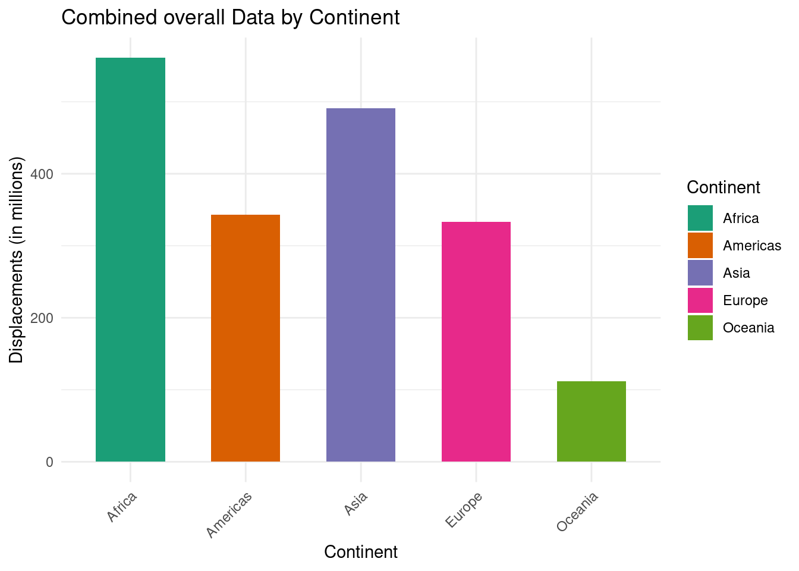
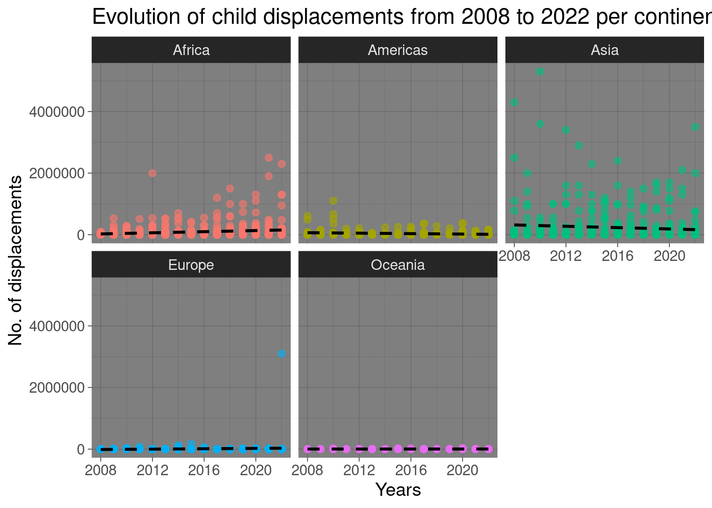
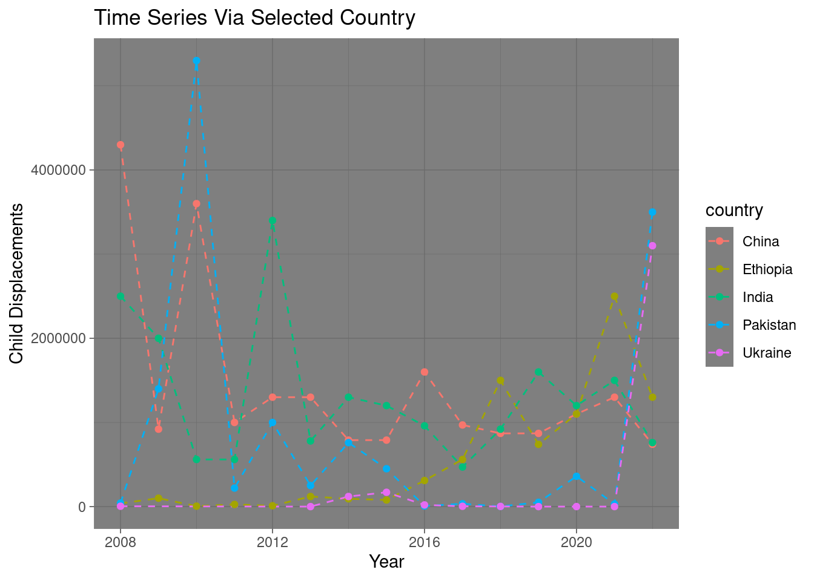
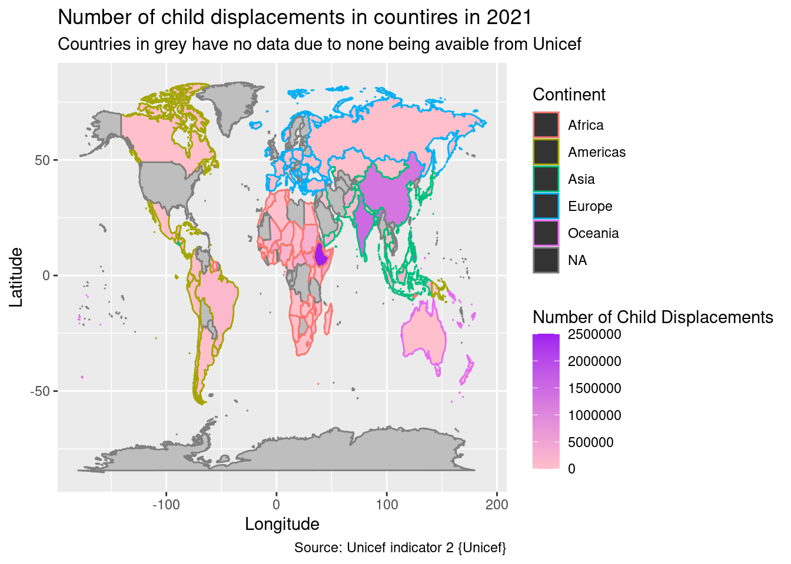
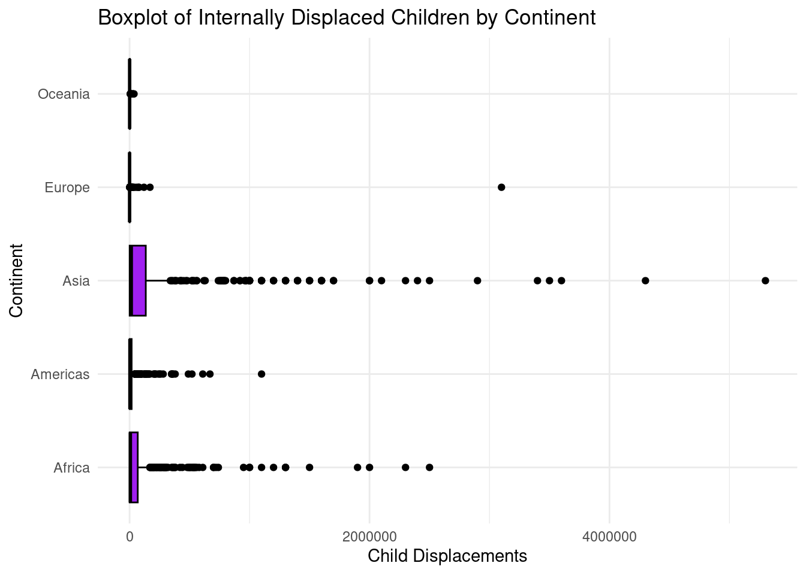
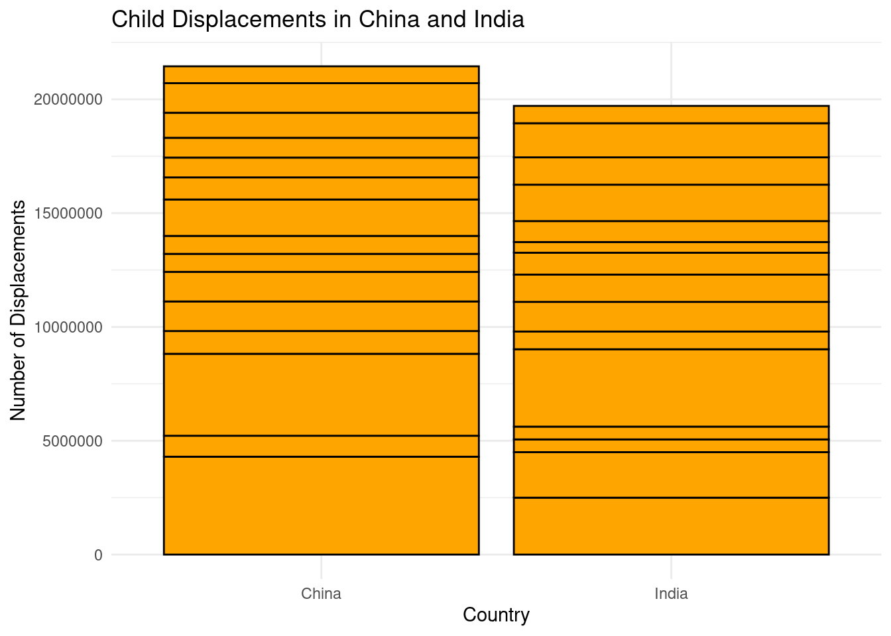

Lost Innocence
Uncovering Unicef’s Coverage of Child Internal Displacements Worldwide From 2008-2022

This report will provide a comprehensive overview of the critical issue of internally displaced children in the world today.
In a world marked by ongoing conflicts, natural disasters, and other humanitarian crises, the plight of displaced children is an urgent concern that demands our attention. This report serves as a powerful tool to analyze the rate of internally displaced children globally, from 2008-2022. The overall aim of the visualisation is to make the viewer understand the massive issue humanity faces today.
It will become apparent that countries in the global North fare a lot better than countries in the global south. The reader will also see that conflict and adverse weather conditions lead to mass internal displacements.
1. Bar Plot
Bar plot documenting the continents with the greatest number of internally displaced children from 2008-2022
The bar plot shows that the global South are heavily affected by child internal displacements in comparison to the global North
2. Scatter Plot
- The viewer can clearly see that Africa and Asia are severely effected.
- Trend line shows Africa is expected to rise while there is a slight tale off for Asia.
- Europe and Oceania experience very little due to being in the global North category of countries.

3. Time Series Line Graph
This graphs documents countries that have been most effected by child internal displacements.
Once again it is clear to see that countries in the global south dominate this chart, however Ukraine, which is currently experiencing conflict with Russia has seen numbers shot up in recent years.

4. World Map
This world map portrays a stark image for 2021. Clearly the viewer can see the vast amount of child displacements.
The global south, namely Africa and Asia are the worst affected, while the global North is relatively low, due to a more stable democracy and less exposure to natural disasters

5. Box Plot

6. Bar Plot of Total Child Displacements in China and India
This garphs displays both China’s and India’s all time child displacement figures from 2008-2022.
Countries that are not considered in the global North or developed countires clearly have a huge issue with child displacements.

7. Conclusion
In conclusion it is clear the see from the above report that there is a world wide epdemic of internally displaced children.
Countries in the Global South are more effected than those in the Global North
Countries with stable democracies see less child displacements, bar Ukraine, who are currently experincng conflict with Russia.